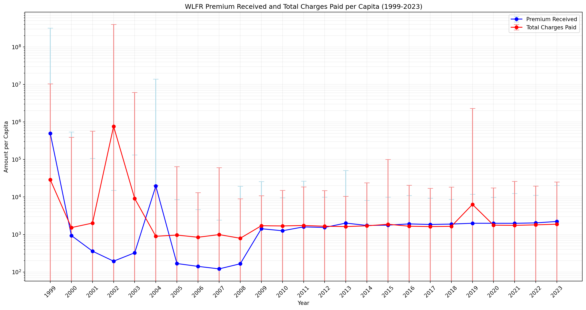
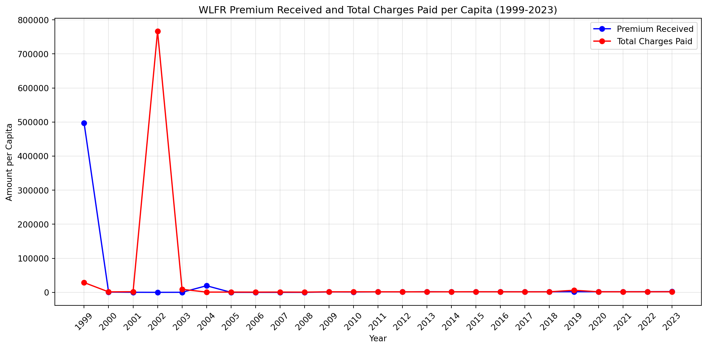
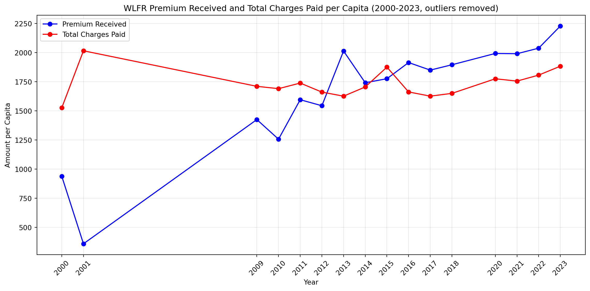
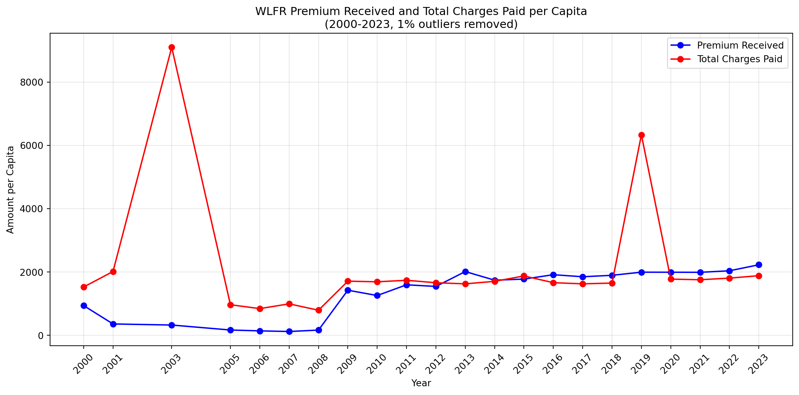
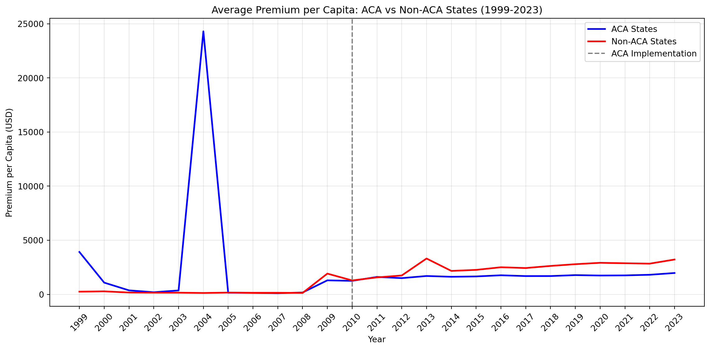
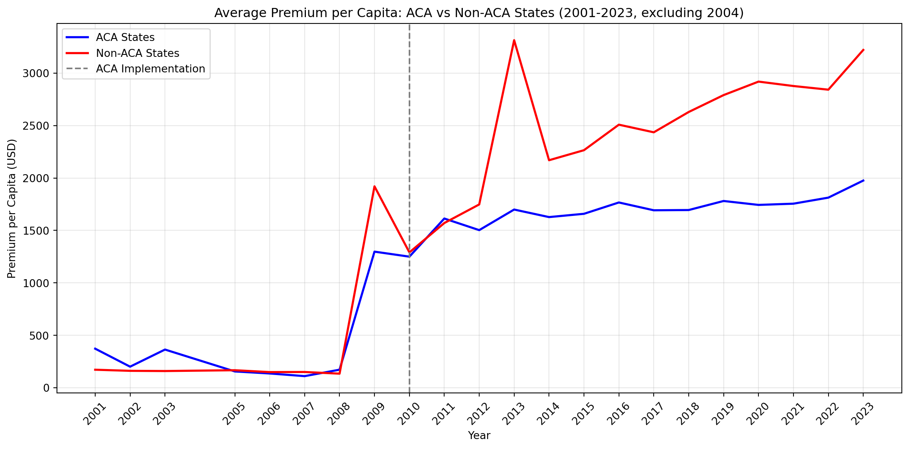

import pandas as pd# Path to the filespath =r"C:/Users/alexr/OneDrive/Desktop/WORK/490_thesis/Final"# Open the first filemain_data = pd.read_excel(f"{path}/processed_combined_data_1999-2023.xlsx")# Print the first few rows of each dataframe to verify they've been loaded correctlyprint("First few rows of processed_combined_data_1999-2023.xlsx:")print(main_data.head())
First few rows of processed_combined_data_1999-2023.xlsx:
ID INS_PRSN_COVERED_EOY_CNT WLFR_PREMIUM_RCVD_AMT \
0 56037334286040 9.0 0
1 56037334286060 NaN 0
2 56037334288020 1.0 0
3 56037334327050 49.0 0
4 56037335180050 65.0 0
WLFR_TOT_CHARGES_PAID_AMT SPONS_DFE_STATE ADMIN_STATE \
0 0 OH OH
1 0 PA NY
2 0 CA NaN
3 0 MA NaN
4 24840 NH NaN
WLFR_PREMIUM_RCVD_AMT_PER_CAPITA WLFR_TOT_CHARGES_PAID_AMT_PER_CAPITA
0 0.0 0.000000
1 0.0 0.000000
2 0.0 0.000000
3 0.0 0.000000
4 0.0 382.153846
Next blocks of code are for summary statistics for variables across all 24 sheets - The variable name is in the first comment on top of each code block
#INS_PRSN_COVERED_EOY_CNT import pandas as pdimport numpy as np# Path to the filepath =r"C:/Users/alexr/OneDrive/Desktop/WORK/490_thesis/Final"# Read all sheets from the Excel fileexcel_file = pd.ExcelFile(f"{path}/processed_combined_data_1999-2023.xlsx")# Initialize lists to store resultssheet_stats = []variable ='INS_PRSN_COVERED_EOY_CNT'#CHANGE HERE# Loop through all sheetsfor sheet_name in excel_file.sheet_names:# Read each sheet df = pd.read_excel(excel_file, sheet_name=sheet_name)# Check if the variable exists in this sheetif variable in df.columns: stats = df[variable].agg(['mean', 'std', 'min', 'max']) stats['sheet'] = sheet_name sheet_stats.append(stats)# Combine all statsall_stats = pd.DataFrame(sheet_stats)# Calculate average statistics across sheetsavg_stats = all_stats[['mean', 'std', 'min', 'max']].mean()# Calculate overall statisticsoverall_mean = avg_stats['mean']overall_std = avg_stats['std']overall_min = all_stats['min'].min()overall_max = all_stats['max'].max()# Print the resultsprint(f"Average Statistics for {variable} across all sheets:")print(f"Mean of Means: {overall_mean:.2f}")print(f"Mean of Standard Deviations: {overall_std:.2f}")print(f"Overall Minimum: {overall_min:.2f}")print(f"Overall Maximum: {overall_max:.2f}")# Print statistics for each sheetprint("\nStatistics for each sheet:")for _, row in all_stats.iterrows():print(f"\nSheet: {row['sheet']}")print(f"Mean: {row['mean']:.2f}")print(f"Standard Deviation: {row['std']:.2f}")print(f"Minimum: {row['min']:.2f}")print(f"Maximum: {row['max']:.2f}")
Average Statistics for INS_PRSN_COVERED_EOY_CNT across all sheets:
Mean of Means: 1333.67
Mean of Standard Deviations: 42041.70
Overall Minimum: 0.00
Overall Maximum: 9999999.00
Statistics for each sheet:
Sheet: Year_1999
Mean: 1388.66
Standard Deviation: 68332.65
Minimum: 0.00
Maximum: 9869819.00
Sheet: Year_2000
Mean: 1630.04
Standard Deviation: 72879.79
Minimum: 0.00
Maximum: 9529314.00
Sheet: Year_2001
Mean: 1339.90
Standard Deviation: 60689.85
Minimum: 0.00
Maximum: 9700209.00
Sheet: Year_2002
Mean: 774.66
Standard Deviation: 30152.49
Minimum: 0.00
Maximum: 9082060.00
Sheet: Year_2003
Mean: 793.28
Standard Deviation: 42871.13
Minimum: 0.00
Maximum: 9999999.00
Sheet: Year_2004
Mean: 881.82
Standard Deviation: 38809.28
Minimum: 0.00
Maximum: 9851283.00
Sheet: Year_2005
Mean: 944.31
Standard Deviation: 41774.22
Minimum: 0.00
Maximum: 8335582.00
Sheet: Year_2006
Mean: 1053.30
Standard Deviation: 47255.47
Minimum: 0.00
Maximum: 9305115.00
Sheet: Year_2007
Mean: 1470.90
Standard Deviation: 68859.05
Minimum: 0.00
Maximum: 8870611.00
Sheet: Year_2008
Mean: 7339.91
Standard Deviation: 192799.09
Minimum: 0.00
Maximum: 9902050.00
Sheet: Year_2009
Mean: 915.33
Standard Deviation: 25566.35
Minimum: 0.00
Maximum: 9122400.00
Sheet: Year_2010
Mean: 1054.79
Standard Deviation: 35088.26
Minimum: 0.00
Maximum: 9782251.00
Sheet: Year_2011
Mean: 1041.82
Standard Deviation: 30644.85
Minimum: 0.00
Maximum: 9708140.00
Sheet: Year_2012
Mean: 1167.65
Standard Deviation: 44624.39
Minimum: 0.00
Maximum: 9906634.00
Sheet: Year_2013
Mean: 983.74
Standard Deviation: 25237.10
Minimum: 0.00
Maximum: 9416328.00
Sheet: Year_2014
Mean: 998.37
Standard Deviation: 15940.98
Minimum: 0.00
Maximum: 3332552.00
Sheet: Year_2015
Mean: 1078.22
Standard Deviation: 28286.42
Minimum: 0.00
Maximum: 8039970.00
Sheet: Year_2016
Mean: 998.98
Standard Deviation: 20000.58
Minimum: 0.00
Maximum: 8083571.00
Sheet: Year_2017
Mean: 1043.85
Standard Deviation: 27478.87
Minimum: 0.00
Maximum: 7313708.00
Sheet: Year_2018
Mean: 1076.05
Standard Deviation: 28779.25
Minimum: 0.00
Maximum: 8982947.00
Sheet: Year_2019
Mean: 993.73
Standard Deviation: 19792.82
Minimum: 0.00
Maximum: 7080959.00
Sheet: Year_2020
Mean: 1008.59
Standard Deviation: 20235.26
Minimum: 0.00
Maximum: 8010120.00
Sheet: Year_2021
Mean: 1010.62
Standard Deviation: 19856.21
Minimum: 0.00
Maximum: 9141269.00
Sheet: Year_2022
Mean: 1132.77
Standard Deviation: 25543.65
Minimum: 0.00
Maximum: 5940246.00
Sheet: Year_2023
Mean: 1220.49
Standard Deviation: 19544.54
Minimum: 0.00
Maximum: 5711250.00
#WLFR_PREMIUM_RCVD_AMTimport pandas as pdimport numpy as np# Path to the filepath =r"C:/Users/alexr/OneDrive/Desktop/WORK/490_thesis/Final"# Read all sheets from the Excel fileexcel_file = pd.ExcelFile(f"{path}/processed_combined_data_1999-2023.xlsx")# Initialize lists to store resultssheet_stats = []variable ='WLFR_PREMIUM_RCVD_AMT'#CHANGE HERE# Loop through all sheetsfor sheet_name in excel_file.sheet_names:# Read each sheet df = pd.read_excel(excel_file, sheet_name=sheet_name)# Check if the variable exists in this sheetif variable in df.columns: stats = df[variable].agg(['mean', 'std', 'min', 'max']) stats['sheet'] = sheet_name sheet_stats.append(stats)# Combine all statsall_stats = pd.DataFrame(sheet_stats)# Calculate average statistics across sheetsavg_stats = all_stats[['mean', 'std', 'min', 'max']].mean()# Calculate overall statisticsoverall_mean = avg_stats['mean']overall_std = avg_stats['std']overall_min = all_stats['min'].min()overall_max = all_stats['max'].max()# Print the resultsprint(f"Average Statistics for {variable} across all sheets:")print(f"Mean of Means: {overall_mean:.2f}")print(f"Mean of Standard Deviations: {overall_std:.2f}")print(f"Overall Minimum: {overall_min:.2f}")print(f"Overall Maximum: {overall_max:.2f}")# Print statistics for each sheetprint("\nStatistics for each sheet:")for _, row in all_stats.iterrows():print(f"\nSheet: {row['sheet']}")print(f"Mean: {row['mean']:.2f}")print(f"Standard Deviation: {row['std']:.2f}")print(f"Minimum: {row['min']:.2f}")print(f"Maximum: {row['max']:.2f}")
Average Statistics for WLFR_PREMIUM_RCVD_AMT across all sheets:
Mean of Means: 2394116.44
Mean of Standard Deviations: 937505906.19
Overall Minimum: -130923183.00
Overall Maximum: 8701261226322.00
Statistics for each sheet:
Sheet: Year_1999
Mean: 15373687.25
Standard Deviation: 6507058397.56
Minimum: -23323344.00
Maximum: 3878411110812.00
Sheet: Year_2000
Mean: 940140.31
Standard Deviation: 655848416.88
Minimum: -30920892.00
Maximum: 501022020020.00
Sheet: Year_2001
Mean: 5305839.37
Standard Deviation: 3961101486.93
Minimum: -8201473.00
Maximum: 3000000000000.00
Sheet: Year_2002
Mean: 78997.47
Standard Deviation: 2485479.26
Minimum: -3844490.00
Maximum: 1127894523.00
Sheet: Year_2003
Mean: 72067.83
Standard Deviation: 1634604.80
Minimum: -5756324.00
Maximum: 367904006.00
Sheet: Year_2004
Mean: 16977056.25
Standard Deviation: 12116390706.69
Minimum: -130923183.00
Maximum: 8701261226322.00
Sheet: Year_2005
Mean: 93082.87
Standard Deviation: 3373281.40
Minimum: -6961535.00
Maximum: 1031570649.00
Sheet: Year_2006
Mean: 89277.43
Standard Deviation: 2426957.79
Minimum: -19645154.00
Maximum: 744821781.00
Sheet: Year_2007
Mean: 79508.49
Standard Deviation: 1844695.54
Minimum: -17170529.00
Maximum: 486492798.00
Sheet: Year_2008
Mean: 78493.40
Standard Deviation: 1929182.42
Minimum: -6356746.00
Maximum: 572542750.00
Sheet: Year_2009
Mean: 1208984.56
Standard Deviation: 8620140.86
Minimum: -5165871.00
Maximum: 683564496.00
Sheet: Year_2010
Mean: 1200608.79
Standard Deviation: 8150634.41
Minimum: -161261.00
Maximum: 643972812.00
Sheet: Year_2011
Mean: 1357688.14
Standard Deviation: 9375537.70
Minimum: -41744.00
Maximum: 672156213.00
Sheet: Year_2012
Mean: 1334077.88
Standard Deviation: 9003971.98
Minimum: -352730.00
Maximum: 713907036.00
Sheet: Year_2013
Mean: 1351143.04
Standard Deviation: 9074786.03
Minimum: -90958.00
Maximum: 770936207.00
Sheet: Year_2014
Mean: 1347478.53
Standard Deviation: 9123341.10
Minimum: -160530.00
Maximum: 799428326.00
Sheet: Year_2015
Mean: 1314744.21
Standard Deviation: 8977970.86
Minimum: -54885.00
Maximum: 891336610.00
Sheet: Year_2016
Mean: 1444899.01
Standard Deviation: 11623077.82
Minimum: -46753.00
Maximum: 1033138735.00
Sheet: Year_2017
Mean: 1371965.62
Standard Deviation: 10657481.20
Minimum: -527495.00
Maximum: 1169712787.00
Sheet: Year_2018
Mean: 1430535.32
Standard Deviation: 13264709.33
Minimum: -164745.00
Maximum: 1350541219.00
Sheet: Year_2019
Mean: 1484440.93
Standard Deviation: 17640843.29
Minimum: -26340.00
Maximum: 1976934319.00
Sheet: Year_2020
Mean: 1312724.96
Standard Deviation: 12210099.69
Minimum: -85607.00
Maximum: 1592661469.00
Sheet: Year_2021
Mean: 1369617.32
Standard Deviation: 14032207.82
Minimum: -42326.00
Maximum: 1849387058.00
Sheet: Year_2022
Mean: 1557656.12
Standard Deviation: 18581111.80
Minimum: -146485.00
Maximum: 2189318285.00
Sheet: Year_2023
Mean: 1678195.93
Standard Deviation: 23218531.60
Minimum: -442265.00
Maximum: 2453180903.00
#WLFR_TOT_CHARGES_PAID_AMTimport pandas as pdimport numpy as np# Path to the filepath =r"C:/Users/alexr/OneDrive/Desktop/WORK/490_thesis/Final"# Read all sheets from the Excel fileexcel_file = pd.ExcelFile(f"{path}/processed_combined_data_1999-2023.xlsx")# Initialize lists to store resultssheet_stats = []variable ='WLFR_TOT_CHARGES_PAID_AMT'#CHANGE HERE# Loop through all sheetsfor sheet_name in excel_file.sheet_names:# Read each sheet df = pd.read_excel(excel_file, sheet_name=sheet_name)# Check if the variable exists in this sheetif variable in df.columns: stats = df[variable].agg(['mean', 'std', 'min', 'max']) stats['sheet'] = sheet_name sheet_stats.append(stats)# Combine all statsall_stats = pd.DataFrame(sheet_stats)# Calculate average statistics across sheetsavg_stats = all_stats[['mean', 'std', 'min', 'max']].mean()# Calculate overall statisticsoverall_mean = avg_stats['mean']overall_std = avg_stats['std']overall_min = all_stats['min'].min()overall_max = all_stats['max'].max()# Print the resultsprint(f"Average Statistics for {variable} across all sheets:")print(f"Mean of Means: {overall_mean:.2f}")print(f"Mean of Standard Deviations: {overall_std:.2f}")print(f"Overall Minimum: {overall_min:.2f}")print(f"Overall Maximum: {overall_max:.2f}")# Print statistics for each sheetprint("\nStatistics for each sheet:")for _, row in all_stats.iterrows():print(f"\nSheet: {row['sheet']}")print(f"Mean: {row['mean']:.2f}")print(f"Standard Deviation: {row['std']:.2f}")print(f"Minimum: {row['min']:.2f}")print(f"Maximum: {row['max']:.2f}")
Average Statistics for WLFR_TOT_CHARGES_PAID_AMT across all sheets:
Mean of Means: 2900620.40
Mean of Standard Deviations: 1250374247.52
Overall Minimum: -50876783.00
Overall Maximum: 7708480105986.00
Statistics for each sheet:
Sheet: Year_1999
Mean: 2665821.87
Standard Deviation: 1124760034.13
Minimum: -1364646.00
Maximum: 511150282545.00
Sheet: Year_2000
Mean: 213424.50
Standard Deviation: 19940838.54
Minimum: -8289273.00
Maximum: 10917007917.00
Sheet: Year_2001
Mean: 904892.43
Standard Deviation: 441396713.48
Minimum: -1315732.00
Maximum: 328563658510.00
Sheet: Year_2002
Mean: 20858868.64
Standard Deviation: 10873961269.16
Minimum: -50876783.00
Maximum: 5719233333333.00
Sheet: Year_2003
Mean: 2112857.35
Standard Deviation: 1406478836.90
Minimum: -8167154.00
Maximum: 1029138029133.00
Sheet: Year_2004
Mean: 226368.61
Standard Deviation: 5428072.56
Minimum: -2373277.00
Maximum: 2691621021.00
Sheet: Year_2005
Mean: 256561.94
Standard Deviation: 16033622.44
Minimum: -6961535.00
Maximum: 10358710356.00
Sheet: Year_2006
Mean: 239416.75
Standard Deviation: 4078612.09
Minimum: -976350.00
Maximum: 966537000.00
Sheet: Year_2007
Mean: 245567.25
Standard Deviation: 4498055.91
Minimum: -2795760.00
Maximum: 1234812800.00
Sheet: Year_2008
Mean: 228099.84
Standard Deviation: 2878510.96
Minimum: -18423904.00
Maximum: 887691107.00
Sheet: Year_2009
Mean: 572107.59
Standard Deviation: 6667240.88
Minimum: -426428.00
Maximum: 2279234232.00
Sheet: Year_2010
Mean: 562189.11
Standard Deviation: 5249304.96
Minimum: -484204.00
Maximum: 1619767769.00
Sheet: Year_2011
Mean: 581563.35
Standard Deviation: 6524144.16
Minimum: -758096.00
Maximum: 1684131637.00
Sheet: Year_2012
Mean: 612977.82
Standard Deviation: 21571525.88
Minimum: -338488.00
Maximum: 9482987651.00
Sheet: Year_2013
Mean: 559397.07
Standard Deviation: 3820717.04
Minimum: -1132735.00
Maximum: 596001549.00
Sheet: Year_2014
Mean: 586686.41
Standard Deviation: 8783507.31
Minimum: -1379539.00
Maximum: 3526873000.00
Sheet: Year_2015
Mean: 633030.31
Standard Deviation: 27968407.11
Minimum: -473154.00
Maximum: 13113073061.00
Sheet: Year_2016
Mean: 33550137.00
Standard Deviation: 15944385732.65
Minimum: -990278.00
Maximum: 7708480105986.00
Sheet: Year_2017
Mean: 578324.93
Standard Deviation: 5596131.21
Minimum: -417068.00
Maximum: 1786974328.00
Sheet: Year_2018
Mean: 599690.20
Standard Deviation: 10347967.91
Minimum: -9542211.00
Maximum: 4458298679.00
Sheet: Year_2019
Mean: 3176789.63
Standard Deviation: 1289111480.78
Minimum: -697801.00
Maximum: 644491643655.00
Sheet: Year_2020
Mean: 597155.34
Standard Deviation: 5034535.64
Minimum: -3788857.00
Maximum: 901602564.00
Sheet: Year_2021
Mean: 613567.26
Standard Deviation: 6857566.79
Minimum: -562736.00
Maximum: 1643106327.00
Sheet: Year_2022
Mean: 638722.01
Standard Deviation: 6920032.52
Minimum: -2990211.00
Maximum: 1807949739.00
Sheet: Year_2023
Mean: 701292.74
Standard Deviation: 11063326.93
Minimum: -1553909.00
Maximum: 4540044555.00
#WLFR_PREMIUM_RCVD_AMT_PER_CAPITA import pandas as pdimport numpy as np# Path to the filepath =r"C:/Users/alexr/OneDrive/Desktop/WORK/490_thesis/Final"# Read all sheets from the Excel fileexcel_file = pd.ExcelFile(f"{path}/processed_combined_data_1999-2023.xlsx")# Initialize lists to store resultssheet_stats = []variable ='WLFR_PREMIUM_RCVD_AMT_PER_CAPITA'#CHANGE HERE# Loop through all sheetsfor sheet_name in excel_file.sheet_names:# Read each sheet df = pd.read_excel(excel_file, sheet_name=sheet_name)# Check if the variable exists in this sheetif variable in df.columns: stats = df[variable].agg(['mean', 'std', 'min', 'max']) stats['sheet'] = sheet_name sheet_stats.append(stats)# Combine all statsall_stats = pd.DataFrame(sheet_stats)# Calculate average statistics across sheetsavg_stats = all_stats[['mean', 'std', 'min', 'max']].mean()# Calculate overall statisticsoverall_mean = avg_stats['mean']overall_std = avg_stats['std']overall_min = all_stats['min'].min()overall_max = all_stats['max'].max()# Print the resultsprint(f"Average Statistics for {variable} across all sheets:")print(f"Mean of Means: {overall_mean:.2f}")print(f"Mean of Standard Deviations: {overall_std:.2f}")print(f"Overall Minimum: {overall_min:.2f}")print(f"Overall Maximum: {overall_max:.2f}")# Print statistics for each sheetprint("\nStatistics for each sheet:")for _, row in all_stats.iterrows():print(f"\nSheet: {row['sheet']}")print(f"Mean: {row['mean']:.2f}")print(f"Standard Deviation: {row['std']:.2f}")print(f"Minimum: {row['min']:.2f}")print(f"Maximum: {row['max']:.2f}")
Average Statistics for WLFR_PREMIUM_RCVD_AMT_PER_CAPITA across all sheets:
Mean of Means: 21864.86
Mean of Standard Deviations: 13302903.79
Overall Minimum: -178856.81
Overall Maximum: 204126900569.05
Statistics for each sheet:
Sheet: Year_1999
Mean: 497355.78
Standard Deviation: 317606747.54
Minimum: -167793.84
Maximum: 204126900569.05
Sheet: Year_2000
Mean: 939.07
Standard Deviation: 541780.03
Minimum: -5469.90
Maximum: 413725862.94
Sheet: Year_2001
Mean: 359.62
Standard Deviation: 106816.38
Minimum: -14029.00
Maximum: 79611495.90
Sheet: Year_2002
Mean: 194.45
Standard Deviation: 14785.44
Minimum: -7002.71
Maximum: 7510664.00
Sheet: Year_2003
Mean: 325.31
Standard Deviation: 133072.64
Minimum: -10409.27
Maximum: 97302682.00
Sheet: Year_2004
Mean: 19583.29
Standard Deviation: 13926898.04
Minimum: -178856.81
Maximum: 10001449685.43
Sheet: Year_2005
Mean: 168.18
Standard Deviation: 8377.70
Minimum: -4420.58
Maximum: 4864419.26
Sheet: Year_2006
Mean: 141.19
Standard Deviation: 4452.28
Minimum: -8692.55
Maximum: 1158915.50
Sheet: Year_2007
Mean: 121.13
Standard Deviation: 2310.33
Minimum: -12160.43
Maximum: 719315.67
Sheet: Year_2008
Mean: 165.78
Standard Deviation: 19261.62
Minimum: -16906.24
Maximum: 9362321.65
Sheet: Year_2009
Mean: 1425.80
Standard Deviation: 24341.72
Minimum: -7756.56
Maximum: 4557096.64
Sheet: Year_2010
Mean: 1257.54
Standard Deviation: 8262.34
Minimum: -15493.00
Maximum: 899956.93
Sheet: Year_2011
Mean: 1596.44
Standard Deviation: 24915.15
Minimum: -965.22
Maximum: 4426571.00
Sheet: Year_2012
Mean: 1544.61
Standard Deviation: 8423.88
Minimum: -9555.00
Maximum: 930275.37
Sheet: Year_2013
Mean: 2014.55
Standard Deviation: 48778.85
Minimum: -4040.00
Maximum: 8981868.57
Sheet: Year_2014
Mean: 1742.20
Standard Deviation: 6340.56
Minimum: -6979.57
Maximum: 439823.59
Sheet: Year_2015
Mean: 1776.61
Standard Deviation: 8188.22
Minimum: -3127.33
Maximum: 656513.92
Sheet: Year_2016
Mean: 1915.42
Standard Deviation: 9067.84
Minimum: -324.67
Maximum: 1103780.75
Sheet: Year_2017
Mean: 1850.59
Standard Deviation: 7464.64
Minimum: -4508.50
Maximum: 874030.45
Sheet: Year_2018
Mean: 1896.44
Standard Deviation: 6763.25
Minimum: -125580.00
Maximum: 850643.95
Sheet: Year_2019
Mean: 1995.18
Standard Deviation: 9843.62
Minimum: -26340.00
Maximum: 882325.70
Sheet: Year_2020
Mean: 1993.55
Standard Deviation: 7876.00
Minimum: -216.33
Maximum: 806761.45
Sheet: Year_2021
Mean: 1991.22
Standard Deviation: 10507.68
Minimum: -661.34
Maximum: 1153207.96
Sheet: Year_2022
Mean: 2038.80
Standard Deviation: 9124.72
Minimum: -180.04
Maximum: 913900.46
Sheet: Year_2023
Mean: 2228.83
Standard Deviation: 18194.21
Minimum: -0.01
Maximum: 1610604.71
#WLFR_TOT_CHARGES_PAID_AMT_PER_CAPITA import pandas as pdimport numpy as np# Path to the filepath =r"C:/Users/alexr/OneDrive/Desktop/WORK/490_thesis/Final"# Read all sheets from the Excel fileexcel_file = pd.ExcelFile(f"{path}/processed_combined_data_1999-2023.xlsx")# Initialize lists to store resultssheet_stats = []variable ='WLFR_TOT_CHARGES_PAID_AMT_PER_CAPITA'#CHANGE HERE# Loop through all sheetsfor sheet_name in excel_file.sheet_names:# Read each sheet df = pd.read_excel(excel_file, sheet_name=sheet_name)# Check if the variable exists in this sheetif variable in df.columns: stats = df[variable].agg(['mean', 'std', 'min', 'max']) stats['sheet'] = sheet_name sheet_stats.append(stats)# Combine all statsall_stats = pd.DataFrame(sheet_stats)# Calculate average statistics across sheetsavg_stats = all_stats[['mean', 'std', 'min', 'max']].mean()# Calculate overall statisticsoverall_mean = avg_stats['mean']overall_std = avg_stats['std']overall_min = all_stats['min'].min()overall_max = all_stats['max'].max()# Print the resultsprint(f"Average Statistics for {variable} across all sheets:")print(f"Mean of Means: {overall_mean:.2f}")print(f"Mean of Standard Deviations: {overall_std:.2f}")print(f"Overall Minimum: {overall_min:.2f}")print(f"Overall Maximum: {overall_max:.2f}")# Print statistics for each sheetprint("\nStatistics for each sheet:")for _, row in all_stats.iterrows():print(f"\nSheet: {row['sheet']}")print(f"Mean: {row['mean']:.2f}")print(f"Standard Deviation: {row['std']:.2f}")print(f"Minimum: {row['min']:.2f}")print(f"Maximum: {row['max']:.2f}")
Average Statistics for WLFR_TOT_CHARGES_PAID_AMT_PER_CAPITA across all sheets:
Mean of Means: 33723.96
Mean of Standard Deviations: 16920728.97
Overall Minimum: -4771105.50
Overall Maximum: 211823456790.11
Statistics for each sheet:
Sheet: Year_1999
Mean: 28918.82
Standard Deviation: 10398198.55
Minimum: -75475.00
Maximum: 3901910553.78
Sheet: Year_2000
Mean: 1527.29
Standard Deviation: 391694.24
Minimum: -68467.00
Maximum: 296374392.31
Sheet: Year_2001
Mean: 2016.48
Standard Deviation: 565370.25
Minimum: -27707.17
Maximum: 326604034.30
Sheet: Year_2002
Mean: 766527.49
Standard Deviation: 402739308.14
Minimum: -656676.00
Maximum: 211823456790.11
Sheet: Year_2003
Mean: 9099.69
Standard Deviation: 6141702.06
Minimum: -108224.35
Maximum: 4494052528.97
Sheet: Year_2004
Mean: 897.42
Standard Deviation: 19440.03
Minimum: -254675.00
Maximum: 5450314.49
Sheet: Year_2005
Mean: 966.36
Standard Deviation: 64025.14
Minimum: -185834.50
Maximum: 43341884.33
Sheet: Year_2006
Mean: 844.02
Standard Deviation: 12238.34
Minimum: -106317.00
Maximum: 3702753.00
Sheet: Year_2007
Mean: 994.66
Standard Deviation: 59988.12
Minimum: -10471.01
Maximum: 29369825.00
Sheet: Year_2008
Mean: 793.52
Standard Deviation: 8165.67
Minimum: -146221.46
Maximum: 2496345.00
Sheet: Year_2009
Mean: 1711.31
Standard Deviation: 9164.84
Minimum: -35961.00
Maximum: 1075121.00
Sheet: Year_2010
Mean: 1691.22
Standard Deviation: 13390.94
Minimum: -6673.00
Maximum: 3757527.00
Sheet: Year_2011
Mean: 1739.36
Standard Deviation: 16902.01
Minimum: -61132.50
Maximum: 5851544.00
Sheet: Year_2012
Mean: 1661.71
Standard Deviation: 13166.47
Minimum: -9905.00
Maximum: 4019209.50
Sheet: Year_2013
Mean: 1626.85
Standard Deviation: 8861.45
Minimum: -28719.86
Maximum: 1305290.75
Sheet: Year_2014
Mean: 1705.86
Standard Deviation: 22300.12
Minimum: -30196.00
Maximum: 7201137.77
Sheet: Year_2015
Mean: 1876.23
Standard Deviation: 99118.41
Minimum: -3240.50
Maximum: 46832403.79
Sheet: Year_2016
Mean: 1663.16
Standard Deviation: 19051.76
Minimum: -13632.80
Maximum: 6417519.00
Sheet: Year_2017
Mean: 1626.99
Standard Deviation: 15425.41
Minimum: -15125.00
Maximum: 5019590.81
Sheet: Year_2018
Mean: 1650.91
Standard Deviation: 16690.08
Minimum: -4771105.50
Maximum: 2444098.00
Sheet: Year_2019
Mean: 6335.65
Standard Deviation: 2302570.51
Minimum: -100880.00
Maximum: 1169676304.27
Sheet: Year_2020
Mean: 1776.16
Standard Deviation: 15789.80
Minimum: -131342.00
Maximum: 6705783.50
Sheet: Year_2021
Mean: 1756.14
Standard Deviation: 24390.53
Minimum: -60235.00
Maximum: 10018941.02
Sheet: Year_2022
Mean: 1807.57
Standard Deviation: 17823.79
Minimum: -34137.00
Maximum: 7822642.00
Sheet: Year_2023
Mean: 1884.08
Standard Deviation: 23447.55
Minimum: -19126.00
Maximum: 7394209.37
Graph of variables over time
import matplotlib.pyplot as pltimport numpy as np# Years from 1999 to 2023years =range(1999, 2024)# Data for WLFR_PREMIUM_RCVD_AMT_PER_CAPITApremium_means = [497355.78, 939.07, 359.62, 194.45, 325.31, 19583.29, 168.18, 141.19, 121.13, 165.78, 1425.80, 1257.54, 1596.44, 1544.61, 2014.55, 1742.20, 1776.61, 1915.42, 1850.59, 1896.44, 1995.18, 1993.55, 1991.22, 2038.80, 2228.83]premium_stds = [317606747.54, 541780.03, 106816.38, 14785.44, 133072.64, 13926898.04, 8377.70, 4452.28, 2310.33, 19261.62, 24341.72, 8262.34, 24915.15, 8423.88, 48778.85, 6340.56, 8188.22, 9067.84, 7464.64, 6763.25, 9843.62, 7876.00, 10507.68, 9124.72, 18194.21]# Data for WLFR_TOT_CHARGES_PAID_AMT_PER_CAPITAcharges_means = [28918.82, 1527.29, 2016.48, 766527.49, 9099.69, 897.42, 966.36, 844.02, 994.66, 793.52, 1711.31, 1691.22, 1739.36, 1661.71, 1626.85, 1705.86, 1876.23, 1663.16, 1626.99, 1650.91, 6335.65, 1776.16, 1756.14, 1807.57, 1884.08]charges_stds = [10398198.55, 391694.24, 565370.25, 402739308.14, 6141702.06, 19440.03, 64025.14, 12238.34, 59988.12, 8165.67, 9164.84, 13390.94, 16902.01, 13166.47, 8861.45, 22300.12, 99118.41, 19051.76, 15425.41, 16690.08, 2302570.51, 15789.80, 24390.53, 17823.79, 23447.55]# Create the plotfig, ax = plt.subplots(figsize=(15, 8))# Plot WLFR_PREMIUM_RCVD_AMT_PER_CAPITAax.errorbar(years, premium_means, yerr=premium_stds, fmt='o-', color='blue', ecolor='lightblue', capsize=5, label='Premium Received')# Plot WLFR_TOT_CHARGES_PAID_AMT_PER_CAPITAax.errorbar(years, charges_means, yerr=charges_stds, fmt='o-', color='red', ecolor='lightcoral', capsize=5, label='Total Charges Paid')# Customize the plotax.set_xlabel('Year')ax.set_ylabel('Amount per Capita')ax.set_title('WLFR Premium Received and Total Charges Paid per Capita (1999-2023)')ax.legend()# Use logarithmic scale for y-axis due to large variationsax.set_yscale('log')# Rotate x-axis labels for better readabilityplt.xticks(years, rotation=45)# Add grid for better readabilityax.grid(True, which="both", ls="-", alpha=0.2)# Show the plotplt.tight_layout()plt.show()

import matplotlib.pyplot as pltimport pandas as pd# Path to the filepath =r"C:/Users/alexr/OneDrive/Desktop/WORK/490_thesis/Final"# Read all sheets from the Excel fileexcel_file = pd.ExcelFile(f"{path}/processed_combined_data_1999-2023.xlsx")# Initialize lists to store resultsyears =range(1999, 2024)premium_means = []charges_means = []# Loop through all sheets and collect meansfor sheet_name in excel_file.sheet_names: df = pd.read_excel(excel_file, sheet_name=sheet_name)if'WLFR_PREMIUM_RCVD_AMT_PER_CAPITA'in df.columns: premium_means.append(df['WLFR_PREMIUM_RCVD_AMT_PER_CAPITA'].mean())if'WLFR_TOT_CHARGES_PAID_AMT_PER_CAPITA'in df.columns: charges_means.append(df['WLFR_TOT_CHARGES_PAID_AMT_PER_CAPITA'].mean())# Create the plotfig, ax = plt.subplots(figsize=(12, 6))# Plot both linesax.plot(years, premium_means, 'b-o', label='Premium Received')ax.plot(years, charges_means, 'r-o', label='Total Charges Paid')# Customize the plotax.set_xlabel('Year')ax.set_ylabel('Amount per Capita')ax.set_title('WLFR Premium Received and Total Charges Paid per Capita (1999-2023)')ax.legend()ax.grid(True, alpha=0.3)# Rotate x-axis labels for better readabilityplt.xticks(years, rotation=45)# Adjust layout to prevent label cutoffplt.tight_layout()plt.show()

import matplotlib.pyplot as pltimport pandas as pdimport numpy as np# Path to the filepath =r"C:/Users/alexr/OneDrive/Desktop/WORK/490_thesis/Final"# Read all sheets from the Excel fileexcel_file = pd.ExcelFile(f"{path}/processed_combined_data_1999-2023.xlsx")# Initialize lists to store resultsyears = []premium_means = []charges_means = []# Function to remove outliersdef remove_outliers(data, threshold=2.576): # 2.576 corresponds to 99% confidence level Q1 = np.percentile(data, 25) Q3 = np.percentile(data, 75) IQR = Q3 - Q1 lower_bound = Q1 - threshold * IQR upper_bound = Q3 + threshold * IQRreturn [x for x in data if lower_bound <= x <= upper_bound]# Loop through all sheets and collect means, skipping 1999for sheet_name in excel_file.sheet_names[1:]: # Start from the second sheet (2000) year =int(sheet_name.split('_')[1]) # Extract year from 'Year_YYYY' format df = pd.read_excel(excel_file, sheet_name=sheet_name)if'WLFR_PREMIUM_RCVD_AMT_PER_CAPITA'in df.columns and'WLFR_TOT_CHARGES_PAID_AMT_PER_CAPITA'in df.columns: premium_mean = df['WLFR_PREMIUM_RCVD_AMT_PER_CAPITA'].mean() charges_mean = df['WLFR_TOT_CHARGES_PAID_AMT_PER_CAPITA'].mean() years.append(year) premium_means.append(premium_mean) charges_means.append(charges_mean)# Remove outlierspremium_means_clean = remove_outliers(premium_means)charges_means_clean = remove_outliers(charges_means)# Create a list of tuples with (year, premium, charge)data_tuples =list(zip(years, premium_means, charges_means))# Filter the data to keep only non-outlier pointsfiltered_data = [ (year, premium, charge) for year, premium, charge in data_tuplesif premium in premium_means_clean and charge in charges_means_clean]# Unzip the filtered datayears_clean, premium_means_clean, charges_means_clean =zip(*filtered_data)# Create the plotfig, ax = plt.subplots(figsize=(12, 6))# Plot both linesax.plot(years_clean, premium_means_clean, 'b-o', label='Premium Received')ax.plot(years_clean, charges_means_clean, 'r-o', label='Total Charges Paid')# Customize the plotax.set_xlabel('Year')ax.set_ylabel('Amount per Capita')ax.set_title('WLFR Premium Received and Total Charges Paid per Capita (2000-2023, outliers removed)')ax.legend()ax.grid(True, alpha=0.3)# Rotate x-axis labels for better readabilityplt.xticks(years_clean, rotation=45)# Adjust layout to prevent label cutoffplt.tight_layout()plt.show()

1% outliers removed, but keep all years
import matplotlib.pyplot as pltimport pandas as pdimport numpy as npfrom scipy import stats# Path to the filepath =r"C:/Users/alexr/OneDrive/Desktop/WORK/490_thesis/Final"# Read all sheets from the Excel fileexcel_file = pd.ExcelFile(f"{path}/processed_combined_data_1999-2023.xlsx")# Initialize lists to store resultsdata = []# First, collect all data in a DataFramefor sheet_name in excel_file.sheet_names[1:]: # Start from the second sheet (2000) year =int(sheet_name.split('_')[1]) df = pd.read_excel(excel_file, sheet_name=sheet_name)if'WLFR_PREMIUM_RCVD_AMT_PER_CAPITA'in df.columns and'WLFR_TOT_CHARGES_PAID_AMT_PER_CAPITA'in df.columns: data.append({'Year': year,'Premium': df['WLFR_PREMIUM_RCVD_AMT_PER_CAPITA'].mean(),'Charges': df['WLFR_TOT_CHARGES_PAID_AMT_PER_CAPITA'].mean() })# Convert to DataFramedf_annual = pd.DataFrame(data)# Sort by yeardf_annual = df_annual.sort_values('Year')# Calculate z-scores for the entire time seriesz_premium = np.abs(stats.zscore(df_annual['Premium']))z_charges = np.abs(stats.zscore(df_annual['Charges']))# Create mask for non-outlier data (99% confidence = z-score < 2.576)mask = (z_premium <2.576) & (z_charges <2.576)# Apply the maskdf_filtered = df_annual[mask].copy()# Create the plotfig, ax = plt.subplots(figsize=(12, 6))# Plot both linesax.plot(df_filtered['Year'], df_filtered['Premium'], 'b-o', label='Premium Received')ax.plot(df_filtered['Year'], df_filtered['Charges'], 'r-o', label='Total Charges Paid')# Customize the plotax.set_xlabel('Year')ax.set_ylabel('Amount per Capita')ax.set_title('WLFR Premium Received and Total Charges Paid per Capita\n(2000-2023, 1% outliers removed)')ax.legend()ax.grid(True, alpha=0.3)# Set x-axis ticks for all yearsplt.xticks(df_filtered['Year'], rotation=45)# Adjust layout to prevent label cutoffplt.tight_layout()plt.show()

Parallel Trends visualization
import pandas as pdimport matplotlib.pyplot as pltimport numpy as np# Path to the filepath =r"C:/Users/alexr/OneDrive/Desktop/WORK/490_thesis/Final"# Define ACA and non-ACA statesaca_states = ['AK', 'AZ', 'AR', 'CA', 'CO', 'CT', 'DE', 'DC', 'HI', 'IL', 'IN', 'IA', 'KY', 'LA', 'ME', 'MD', 'MA', 'MI', 'MN', 'MS', 'MO', 'MT', 'NE', 'NV', 'NH', 'NJ', 'NM', 'NY', 'NC', 'ND', 'OH', 'OK', 'OR', 'PA', 'RI', 'SC', 'SD', 'UT', 'VT', 'VA', 'WA']non_aca_states = ['AL', 'FL', 'GA', 'ID', 'KS', 'TN', 'TX', 'WI', 'WY']# Initialize lists to store resultsyears =range(1999, 2024)aca_means = []non_aca_means = []# Read the Excel fileexcel_file = pd.ExcelFile(f"{path}/processed_combined_data_1999-2023.xlsx")# Loop through all sheetsfor year in years: sheet_name =f"Year_{year}" df = pd.read_excel(excel_file, sheet_name=sheet_name)# Determine which state column to use based on the yearif year <2009: state_column ='SPONS_DFE_STATE'else: state_column ='SPONS_DFE_MAIL_US_STATE'# Check if required columns existif state_column notin df.columns:print(f"Warning: {state_column} column not found in sheet {sheet_name}") aca_means.append(np.nan) non_aca_means.append(np.nan)continueif'WLFR_PREMIUM_RCVD_AMT_PER_CAPITA'notin df.columns:print(f"Warning: WLFR_PREMIUM_RCVD_AMT_PER_CAPITA column not found in sheet {sheet_name}") aca_means.append(np.nan) non_aca_means.append(np.nan)continue# Calculate means for ACA and non-ACA states aca_mean = df[df[state_column].isin(aca_states)]['WLFR_PREMIUM_RCVD_AMT_PER_CAPITA'].mean() non_aca_mean = df[df[state_column].isin(non_aca_states)]['WLFR_PREMIUM_RCVD_AMT_PER_CAPITA'].mean() aca_means.append(aca_mean) non_aca_means.append(non_aca_mean)# Create the plotplt.figure(figsize=(12, 6))# Plot lines for ACA and non-ACA statesplt.plot(years, aca_means, 'b-', label='ACA States', linewidth=2)plt.plot(years, non_aca_means, 'r-', label='Non-ACA States', linewidth=2)# Add vertical line for ACA implementationplt.axvline(x=2010, color='gray', linestyle='--', label='ACA Implementation')# Customize the plotplt.xlabel('Year')plt.ylabel('Premium per Capita (USD)')plt.title('Average Premium per Capita: ACA vs Non-ACA States (1999-2023)')plt.legend()plt.grid(True, alpha=0.3)# Rotate x-axis labels for better readabilityplt.xticks(years, rotation=45)# Add tight layout to prevent label cutoffplt.tight_layout()plt.show()

import pandas as pdimport matplotlib.pyplot as pltimport numpy as np# Path to the filepath =r"C:/Users/alexr/OneDrive/Desktop/WORK/490_thesis/Final"# Define ACA and non-ACA statesaca_states = ['AK', 'AZ', 'AR', 'CA', 'CO', 'CT', 'DE', 'DC', 'HI', 'IL', 'IN', 'IA', 'KY', 'LA', 'ME', 'MD', 'MA', 'MI', 'MN', 'MS', 'MO', 'MT', 'NE', 'NV', 'NH', 'NJ', 'NM', 'NY', 'NC', 'ND', 'OH', 'OK', 'OR', 'PA', 'RI', 'SC', 'SD', 'UT', 'VT', 'VA', 'WA']non_aca_states = ['AL', 'FL', 'GA', 'ID', 'KS', 'TN', 'TX', 'WI', 'WY']# Initialize lists to store resultsyears = [year for year inrange(2001, 2024) if year !=2004]aca_means = []non_aca_means = []# Read the Excel fileexcel_file = pd.ExcelFile(f"{path}/processed_combined_data_1999-2023.xlsx")# Loop through all sheets except 1999, 2000, and 2004for year in years: sheet_name =f"Year_{year}" df = pd.read_excel(excel_file, sheet_name=sheet_name)# Determine which state column to use based on the yearif year <2009: state_column ='SPONS_DFE_STATE'else: state_column ='SPONS_DFE_MAIL_US_STATE'# Check if required columns existif state_column notin df.columns:print(f"Warning: {state_column} column not found in sheet {sheet_name}") aca_means.append(np.nan) non_aca_means.append(np.nan)continueif'WLFR_PREMIUM_RCVD_AMT_PER_CAPITA'notin df.columns:print(f"Warning: WLFR_PREMIUM_RCVD_AMT_PER_CAPITA column not found in sheet {sheet_name}") aca_means.append(np.nan) non_aca_means.append(np.nan)continue# Calculate means for ACA and non-ACA states aca_mean = df[df[state_column].isin(aca_states)]['WLFR_PREMIUM_RCVD_AMT_PER_CAPITA'].mean() non_aca_mean = df[df[state_column].isin(non_aca_states)]['WLFR_PREMIUM_RCVD_AMT_PER_CAPITA'].mean() aca_means.append(aca_mean) non_aca_means.append(non_aca_mean)# Create the plotplt.figure(figsize=(12, 6))# Plot lines for ACA and non-ACA statesplt.plot(years, aca_means, 'b-', label='ACA States', linewidth=2)plt.plot(years, non_aca_means, 'r-', label='Non-ACA States', linewidth=2)# Add vertical line for ACA implementationplt.axvline(x=2010, color='gray', linestyle='--', label='ACA Implementation')# Customize the plotplt.xlabel('Year')plt.ylabel('Premium per Capita (USD)')plt.title('Average Premium per Capita: ACA vs Non-ACA States (2001-2023, excluding 2004)')plt.legend()plt.grid(True, alpha=0.3)# Rotate x-axis labels for better readabilityplt.xticks(years, rotation=45)# Add tight layout to prevent label cutoffplt.tight_layout()plt.show()

First Attempt at Regression (we did not use this one)
import pandas as pd import numpy as np import statsmodels.api as sm from scipy import stats
with pd.ExcelWriter(f”{path}/did_regression_results.xlsx”) as writer: coef_df1.to_excel(writer, sheet_name=‘Premium_Results’) coef_df2.to_excel(writer, sheet_name=‘Charges_Results’)
Working Regression + Dynamic DiD Graph
Working for the graph we want
- WLFR_TOT_CHARGES_PAID_AMT_PER_CAPITA
```{python}
import pandas as pd
import numpy as np
import matplotlib.pyplot as plt
import statsmodels.api as sm
from statsmodels.formula.api import ols
# Path to the file
excel_file = "C:/Users/alexr/OneDrive/Desktop/WORK/490_thesis/Final/processed_combined_data_1999-2023.xlsx"
# List of ACA states
aca_states = ['AK', 'AZ', 'AR', 'CA', 'CO', 'CT', 'DE', 'DC', 'HI', 'IL',
'IN', 'IA', 'KY', 'LA', 'ME', 'MD', 'MA', 'MI', 'MN', 'MS',
'MO', 'MT', 'NE', 'NV', 'NH', 'NJ', 'NM', 'NY', 'NC', 'ND',
'OH', 'OK', 'OR', 'PA', 'RI', 'SC', 'SD', 'UT', 'VT', 'VA', 'WA']
# Initialize a list to store the dataframes for each year
all_data = []
# Process each year's data (excluding 1999, 2000, and 2004)
for year in range(2001, 2024):
if year != 2004:
try:
# Read sheet
df = pd.read_excel(excel_file, sheet_name=f"Year_{year}")
# Add Year column
df['Year'] = year
# Determine the correct state column
state_col = 'SPONS_DFE_MAIL_US_STATE' if year >= 2009 else 'SPONS_DFE_STATE'
# Add ACA indicator
df['ACA'] = df[state_col].isin(aca_states).astype(int)
# Calculate per capita value, replacing infinities and NaNs with NaN
df['WLFR_TOT_CHARGES_PAID_AMT_PER_CAPITA'] = df['WLFR_TOT_CHARGES_PAID_AMT'] / df['INS_PRSN_COVERED_EOY_CNT']
df['WLFR_TOT_CHARGES_PAID_AMT_PER_CAPITA'] = df['WLFR_TOT_CHARGES_PAID_AMT_PER_CAPITA'].replace([np.inf, -np.inf], np.nan)
all_data.append(df)
except Exception as e:
print(f"Failed to process Year_{year}: {e}")
# Combine all data
combined_data = pd.concat(all_data, ignore_index=True)
# Remove rows with NaN or non-positive values in the dependent variable
combined_data = combined_data[combined_data['WLFR_TOT_CHARGES_PAID_AMT_PER_CAPITA'] > 0]
# Remove outliers (5% from each tail)
combined_data = combined_data[combined_data['WLFR_TOT_CHARGES_PAID_AMT_PER_CAPITA'].between(
combined_data['WLFR_TOT_CHARGES_PAID_AMT_PER_CAPITA'].quantile(0.05),
combined_data['WLFR_TOT_CHARGES_PAID_AMT_PER_CAPITA'].quantile(0.95)
)]
# Log transform the Y variable
combined_data['log_Y'] = np.log(combined_data['WLFR_TOT_CHARGES_PAID_AMT_PER_CAPITA'])
# Create Post indicator
combined_data['Post'] = (combined_data['Year'] >= 2010).astype(int)
# Create interaction term
combined_data['ACA_Post'] = combined_data['ACA'] * combined_data['Post']
# Run regression
model = ols('log_Y ~ ACA + Post + ACA_Post', data=combined_data).fit()
# Print regression results
print(model.summary())
# Prepare data for event study graph
event_study_data = []
for year in range(2001, 2024):
if year != 2004:
year_data = combined_data[combined_data['Year'] == year]
aca_mean = year_data[year_data['ACA'] == 1]['log_Y'].mean()
non_aca_mean = year_data[year_data['ACA'] == 0]['log_Y'].mean()
if not np.isnan(aca_mean) and not np.isnan(non_aca_mean):
diff = aca_mean - non_aca_mean
event_study_data.append({'Year': year, 'Diff': diff})
event_study_df = pd.DataFrame(event_study_data)
event_study_df['Time'] = event_study_df['Year'] - 2010
# Previous code remains the same until the plotting section
# Create event study graph with confidence intervals
plt.figure(figsize=(12, 6))
# Calculate 95% confidence intervals
ci = 1.96 * event_study_df['Diff'].std()
# Plot points and confidence intervals
plt.errorbar(event_study_df['Time'],
event_study_df['Diff'],
yerr=ci,
fmt='o-',
capsize=5,
capthick=1,
elinewidth=1,
markersize=5,
color='blue',
label='Estimated Effect')
plt.axvline(x=0, color='r', linestyle='--', label='ACA Implementation')
plt.axhline(y=0, color='k', linestyle='-')
# Adjust axes
plt.xlim(-10, 15) # Extend x-axis range
plt.ylim(-0.5, 0.5) # Adjust y-axis range
# Add labels and title
plt.xlabel('Years Relative to ACA Implementation')
plt.ylabel('Difference in Log Per Capita Charges Paid')
plt.title('Event Study: Impact of ACA on Per Capita Charges Paid')
# Add grid and legend
plt.grid(True, linestyle='--', alpha=0.7)
plt.legend()
# Adjust layout to prevent label cutoff
plt.tight_layout()
plt.show()
Now for variable WLFR_PREMIUM_RCVD_AMT_PER_CAPITA - same code
import pandas as pd import numpy as np import matplotlib.pyplot as plt import statsmodels.api as sm from statsmodels.formula.api import ols
Initialize a list to store the dataframes for each year
all_data = []
Process each year’s data (excluding 1999, 2000, and 2004)
for year in range(2001, 2024): if year != 2004: try: # Read sheet df = pd.read_excel(excel_file, sheet_name=f”Year_{year}“)
# Add Year column
df['Year'] = year
# Determine the correct state column
state_col = 'SPONS_DFE_MAIL_US_STATE' if year >= 2009 else 'SPONS_DFE_STATE'
# Add ACA indicator
df['ACA'] = df[state_col].isin(aca_states).astype(int)
# Calculate per capita value, replacing infinities and NaNs with NaN
df['WLFR_PREMIUM_RCVD_AMT_PER_CAPITA'] = df['WLFR_PREMIUM_RCVD_AMT'] / df['INS_PRSN_COVERED_EOY_CNT']
df['WLFR_PREMIUM_RCVD_AMT_PER_CAPITA'] = df['WLFR_PREMIUM_RCVD_AMT_PER_CAPITA'].replace([np.inf, -np.inf], np.nan)
all_data.append(df)
except Exception as e:
print(f"Failed to process Year_{year}: {e}")
model = ols(‘log_Y ~ ACA + Post + ACA_Post’, data=combined_data).fit()
Print regression results
print(model.summary())
Prepare data for event study graph
event_study_data = [] for year in range(2001, 2024): if year != 2004: year_data = combined_data[combined_data[‘Year’] == year] aca_mean = year_data[year_data[‘ACA’] == 1][‘log_Y’].mean() non_aca_mean = year_data[year_data[‘ACA’] == 0][‘log_Y’].mean() if not np.isnan(aca_mean) and not np.isnan(non_aca_mean): diff = aca_mean - non_aca_mean event_study_data.append({‘Year’: year, ‘Diff’: diff})
plt.xlim(-10, 15) # Extend x-axis range plt.ylim(-1, 1) # Adjust y-axis range
Add labels and title
plt.xlabel(‘Years Relative to ACA Implementation’) plt.ylabel(‘Difference in Log Per Capita Premiums Received’) plt.title(‘Event Study: Impact of ACA on Per Capita Premiums Received’)